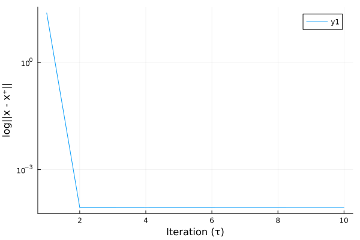

Getting started
What's a VI?
If you're already familiar with variational inequalities (VI), hop to the basic example below for an overview on how to use monviso. Otherwise, the following provides an (extremely) essential introduction to VIs and to the nomenclature that will be used in the rest of the documentation.
Given a vector mapping $\mathbf{F} : \mathbb{R}^n \to \mathbb{R}^n$ and a scalar convex (possibly non-smooth) function $g : \mathbb{R}^n \to \mathbb{R}$, solving a VI consists of solving the following
\[ \text{find } \mathbf{x}^* \in \mathbb{R}^n \text{ such that } (\mathbf{x} - \mathbf{x}^*)^\top \mathbf{F}(\mathbf{x}^*) - g(\mathbf{x}) - g(\mathbf{x}^*) \geq 0, \quad \forall \mathbf{x} \in \mathbb{R}^n.\]
It turns out that a lot of problems in optimal control, optimization, machine learning, game theory, finance, and much more, boil down to solving some instance of such a VI problem. Such a problem is usually solved through iterative methods: one constructs an algorithm that produces a $\mathbf{x}_k$ at each iteration $k$ such that $\mathbf{x}_k \to \mathbf{x}^*$ when $k \to \infty$.
What monviso does is providing a convenient way for accessing and using these iterative methods for solving an instance of the problem above. The iterative methods that are currently implemented are listed in the API documentation. Since many of these algorithms rely on evaluating a proximal operator (or a projection step), monviso builds on top of cvxpy, a package for modelling and solving convex optimization problems.
Basic example
Let $F(\mathbf{x}) = \mathbf{H} \mathbf{x} + \text{tanh} |\mathbf{x}|$ for some $\mathbf{H} \succ 0$, $g(\mathbf{x}) = \|\mathbf{x}\|_1$, and $\mathcal{S} = \{\mathbf{x} \in \mathbb{R}^n : \mathbf{A} \mathbf{x} \leq \mathbf{b}\}$, for some $\mathbf{A} \in \mathbb{R}^{m \times n}$ and $\mathbf{b} \in \mathbb{R}^n$. It is straightforward to verify that $F(\cdot)$ is monotone and Lipschitz with $L = \|\mathbf{H}\|_2 + 1$. The solution of the VI in can be implemented using Monviso.jl as follows
using Monviso, JuMP, Clarabel, LinearAlgebra, Plots
# Create the problem data
const n, m = 30, 40
H = rand(n, n)
A = rand(m, n)
b = rand(m)
# Make H positive semidefinite
H = H * H'
# Lipschitz and strong monotonicity constants
L = norm(H) + 1
μ = eigvals(H) |> minimum
# Define the F mapping
F(x) = H * x .+ tanh.(abs.(x))
# Define a JuMP.Model
model = Model(Clarabel.Optimizer)
y = @variable(model, [1:n])
@constraint(model, A * y <= b),
@constraint(model, y >= 0)
# Instantitate the VI
vi = VI(F; y=y, model=model)
# Define the initial point, step-size, and max number of iterations
x = rand(n) .+ 4
χ = 2/L^2
T = 10
# Solve the VI using the proximal gradient iterate
residual = zeros(T)
for τ in 1:T
x⁺ = pg(vi, x, χ)
residual[τ] = norm(x .- x⁺)
x[:] = x⁺
end
# Lets look at the residuals
plot(residual, yscale=:log, xlabel="Iteration (τ)", ylabel="log||x - x⁺||")